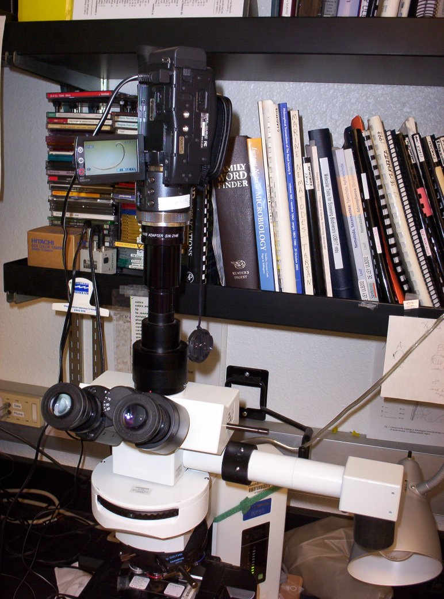

Sony's HDV camcorder comes with a flip-out LCD with touch screen controls, as well as a separate remote that allows vibration-free starting and stopping of recording.
Unlike S-VHS cameras, there is no simple option to display a live image from the camcorder on a separate monitor, so exact focusing at a single level is difficult using just the camcorder's LCD screen. Fortunately this is not a problem when recording a multifocal series, as you move through all focal planes anyway while you're recording.
It is a limitation however with respect to on-the-spot quality control - you cannot evaluate the final quality of the recorded images until they have been transferred from HDV tape to computer!
(The cable attached to the camcorder as shown above is a powercable.)
Next > What's with the drawing tube?
< Back to the list of parts